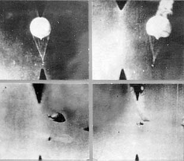
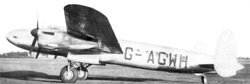
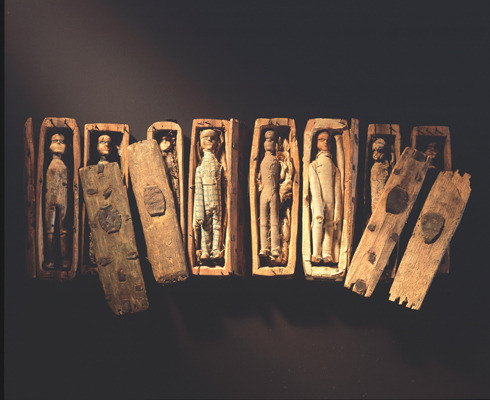
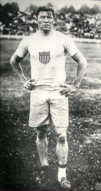

This is the battle, where a huge persian army considered to be the largest ever assembled at that time clashed with the small Greek army led by 300 ferocious Spartan soldiers under the command of Leonidas I. This is the place where the 300 courageous soldiers made their last stand. This battle would also shape the western democracy. The Greeks chose Thermopylae since it gave a huge geographical advantage. It was a narrow creek, where the huge Persian army has to funnel through. This nullified the greatest advantage that the Persian's had in the battle, which is sheers numbers.
The Persian king sent a messenger to get the Spartans surrender over terms, and the Spartans rejected. The messenger left with the famous words, "Our arrows will black out the sun" for which one of the Spartan replies "Then we will fight our war in shade". For two days, the Spartans slaughters the Persians, even the infamous Immortals (There were called immortals because they were always 10,000 of them, for any death is immediately replaced). On the Persian king realizing their flaws, mobilizes an army through another pass as informed by a traitor and surrounds the Spartans. And the final war is the last stand of the 300 Spartan's, where they fight and die. It is said as a less known fact that, there were also around a 1000 of the other Greek army that decided to fight and die along side the 300 Spartan's.
IMPORTANCE: Historians say that the sense of one Greece was born in the pass of Thermopylae. It is this battle where the different states of Sparta and Athens abandoned their differences and fought against their common enemy Persians. It is this battle which ignited a spark of Greece as one nation which was later accomplished by Philip II of Macedon and subsequently carried over by his son Alexander the Great who defeated Persia and helped spread the Greek culture.

A fire balloon (風船爆弾, fūsen bakudan, lit. "balloon bomb"), or Fu-Go, was a weapon launched by Japan during World War II. A hydrogen balloon with a load varying from a 12-kilogram (26 lb) incendiary to one 15 kg (33 lb) antipersonnel bomb and four 5 kg (11 lb) incendiary devices attached, they were designed as a cheap weapon intended to make use of the jet stream over the Pacific Ocean and wreak havoc on Canadian and American cities, forests, and farmland.
The balloons were relatively ineffective as weapons but were used in one of the few attacks on North America during World War II.
Between November 1944 and April 1945, Japan launched over 9,300 fire balloons. About 300 balloon bombs were found or observed in North America, killing six people and causing a small amount of damage.
Similar, but cruder, balloons were also used by Britain to attack Germany between 1942 and 1944.
More Info: Fire Balloons (Wiki Link)
Star Dust was a British South American Airways (BSAA) Avro Lancastrian airliner which crashed into Mount Tupungato in the Argentine Andes on 2 August 1947, during a flight from Buenos Aires to Santiago, Chile. A comprehensive search of a wide area (including what is now known to have been the crash site) was fruitless, and the fate of the aircraft and occupants remained unknown for over 50 years. An investigation in 2000 determined the crash was caused by weather-related factors, but until then speculation had included theories of international intrigue, intercorporate sabotage and even abduction by aliens.
In the late 1990s, pieces of wreckage from the missing aircraft began to emerge from the glacial ice. It is now assumed that the crew became confused as to their exact location while flying at high altitudes through the (then poorly understood) jet stream. Mistakenly believing they had already cleared the mountain tops, they started their descent when they were in fact still behind cloud-covered peaks, and Star Dust crashed into Mount Tupungato, killing all aboard and burying itself in snow and ice.
The last word in Star Dust's final Morse code transmission to Santiago airport, "STENDEC", was received by the airport control tower four minutes prior to its planned landing and repeated twice; it has never been satisfactorily explained.
More Info: BSAA Star Dust incident (Wiki Link)
Just a few years after the “Anatomy Murderers” Burke and Hare were apprehended in Edinburgh, two boys discovered these tiny dolls, each nested into a miniature coffin hidden away in the city park.
At first theories on the dolls' significance ranged from witchcraft to child’s toys, but eventually it began to seem that the 17 tiny figures could be effigies for the 17 murder victims a decade earlier.
Between 1827-1828 William Burke and William Hare lured in and murdered their lodgers in a scheme to provide fresh bodies to the local anatomy school. Dr. Robert Knox, a brilliant and well-known local anatomy lecturer, purchased the bodies and most likely knew that something was a bit suspicious about his supply chain.
More Info:
He is considered as one of the most versatile athletes of 20th century. He won olympic gold with record timing wearing only shoes that he picked up from garbage that did not fit him well, so he wore extra socks. It is widely regarded that he was discriminated because of his Indian-American ancestry.
More Info: Jim Thorpe (Wiki Link)